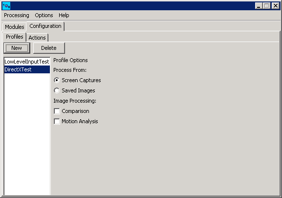
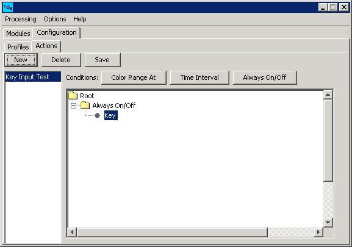

Generic Module Help
Introduction
The Generic Module provides a generic way of automating
applications.
Configuration
The Generic Module processes a selected profile. Each
profile contains zero or more actions. Each action contains a
script.
Profiles
Only one Profile is processed during Generic Module processing.
Each Profile has individual configuration across all of its
actions. A Profile may process images from files or screen
captures. Further processing for each image is based on
processing needs. For example, if a script needs the results of
comparing two images then comparison processing is turned on for all
images. This allows the image comparison to be reused by other
action scripts.

Actions
Actions are named scripts that the Generic Module will
process. The Generic Module processes every action, but custom
modules may call at will.
Scripts
Scripts may contain conditions that have further conditions that in
turn process input or output on the success of parent conditions.
Take the following example:

Extensibility
Application specific modules developed with the SDK should
extend the Generic Module.
|